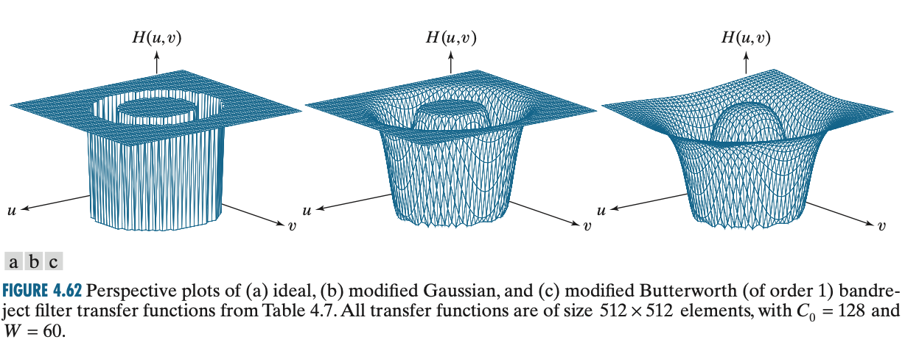

频域的图像增强
理论基础
背景知识
- 一维离散傅里叶变换及反变换
- 二维离散傅里叶变换及反变换
二维傅里叶变换的性质
1.平移特性
公式(1)表明了对原图进行平移操作，其傅里叶变换的幅值不变。
公式(2)表明了将原图乘以一个指数项，等于将其频域图平移。
利用这一性质我们可以对图像进行原点平移，通常我们将傅里叶变换的后的图像原点放置在坐标系中的中心位置，即(M/2,N/2)。则$u_0=M/2,v_0=N/2$，得到图像函数所乘的指数项为$(-1)^{x+y}$.
2.旋转性
引入极坐标：$x=r\ cos\theta,\ y=r\ sin\theta,u=\omega\ cos\varphi,v=\omega\ sin\varphi$ .
公式(3)表明$f(x,y)$转过同样的角度，$F(u,v)$也转过同样的角度，反正亦然。
3.周期性
类似于循环位移性质，不过是二维的。
4.共轭对称性
傅里叶变换的频率谱是关于原点对称的。
5.分离性
快速傅里叶变换
FFT与原始算法的计算量之比为$log_2M/M$。
1.在运用FFT时，通常需要把图像扩展到$2^n$大小；
2.在做两幅图像的卷积或者相关性运算时，如果两幅图片大小不一致（即两个函数周期不一致），也需要扩展尺寸较小的那一幅图像。
频率域滤波基础
一般来说，低频分量对应图像中变化慢的区域，而高频分量对应图像中灰度变化快的区域（边缘，噪声等）。
频率域滤波的步骤：
- $(-1)^{x+y}$乘以原图像
- $DFT$
- $H(u,v)\times F(u,v)$
- $IDFT$
- 实部
- 用$(-1)^{x+y}\times$(5)的结果

为什么要取实部呢？如果输入图像和滤波函数都是实数函数，那么理想情况下，滤波后的反傅里叶变换的虚部应该是0.但是，由于傅里叶变换计算上的舍入等误差，反傅里叶变换一般有寄生的虚部成分，不过这些虚部成分可以忽略。
平滑的频率域滤波器（低通）
平滑滤波器：一般指的就是低通滤波器，将高频分量抑制来实现平滑滤波。
应用：可以用于平滑处理，如图像由于量化不足（灰度分辨率不够）时产生的虚假轮廓。同时可以用于去除噪声。
理想低通滤波器
（Ideal Lowpass Filter）
截断$F(u,v)$中的频率处于指定距离$D_0$（截止频率）之外的所有高频成分。
$D(u,v)$是点$(u,v)$距频率原点的距离，其中$D(u,v)=\sqrt{(u-M/2)^2+(v-N/2)^2}$ .
因为中心化后，频域原点在频谱图的中心，所以中心点是常量也就是平均值，越往边上移动，频率就会越高。
振铃现象十分显著：
问题：如何确定截止频率？
答：根据截止频率为半径的圆内所包含的功率值，来选择相应的截止频率。
巴特沃斯低通滤波器
（Butterworth Lowpass Filter）
n代表滤波器阶数。当$D(u,v)=D_0$时，$H(u,v)=0.5$;
二阶BLPF处于有效低通滤波和可接受的振铃特征之间：
高斯低通滤波器
（Gaussian Lowpass Filters）
其中$D_0$为截止频率，当$D(u,v)=D_0$时，滤波器下降到其最大值的0.607处。无振铃现象，曲线如下：

低通滤波器的应用实例
字符识别：通过模糊图像，桥接断裂字符的裂缝等；
印刷和出版社：从一幅尖锐的原始图像产生平滑，柔和的外观，如人脸，减少皮肤细纹的锐化程度和小斑点；
处理卫星和航空图像：尽可能模糊细节，而保留大的可识别特征。低通滤波器通过消除不重要的特征来简化感兴趣的特征的分析；
频率域锐化处理
IHPF,GHPF,BHPF
高通滤波器可直接用上面的结论取反；


拉普拉斯算子
公式过程略，详情见教材相关内容；
效果图：
高频增强滤波
高频增强滤波是在高通滤波器上再加一个常数使得低频信号也能过去实现的。
图一为原图；图二为高斯高通滤波后的结果；图三是图一和图二组合起来的结果；图四为直方图均衡化结果；
带通带阻滤波器
带阻滤波器
阻止一定频率的信号（允许其他频率范围信号），旋转对称；

带通滤波器
在带阻滤波器基础上变换。
同态滤波器
频域滤波可以灵活地解决加性噪声问题，但无法消减乘性或卷积性噪声。
同态滤波器是在频域中同时压缩动态（灰度）范围并增强局部对比度，来实现图像增强的方法。
为了分离加性组合的信号，常采用线性滤波的方法，而非加性信号组合常用同态滤波的技术将非线性问题转化成线性问题处理，即先对非线性（乘性或者卷积性）混杂信号作某种数学运算，变换成加性的。然后用线性滤波方法处理，最后作反变换运算,恢复处理后图像。
假如在阳光灿烂的风景照中，由于底片的动态范围比较窄，照片中的对比度要降低很多。这个现象在亮区或者暗区尤其明显。
照射反射模型,
一般假定入射光的动态范围很大并且变化缓慢，而反射光部分变化迅速，它确定了图的细节和局部的对比度。因此补救方法应该是减少$i(x,y)$并同时增加$r(x,y)$，
因为乘积的傅里叶变换不是变换的乘积，
对模型两边取对数，再变换，
而后步骤详情请见教材。
同态滤波步骤小结：
一般来说，图片照射分量往往以空间域的慢变化为特征，而反射分量往往发生突变，尤其是在不同物体的连接部分。导致傅里叶变换：
函数形状可用稍微变形一下的高斯高通滤波器来近似；
常数$C$控制函数坡度的锐利度，它在$\gamma_L$和$\gamma_H$之间过渡，$\gamma_L<1$而$\gamma_h>1$。下图为圆形对称的径向剖面图。
Matlab实现
预处理
中心化
1 | Y = fftshift(X)；%通过将零频分量移动到数组中心，重新排列傅里叶变换 X。 |
计算并可视化二维DFT
1 | Y = fft2(X); |
傅里叶逆变换
1 | f = ifft2(F); |
空间滤波实际上和频域滤波是对等的，空间滤波的掩模是进行卷积运算，而频域滤波是进行乘法运算；实际上，空间卷积通常使用较小的掩模来简化，使用这种较小掩模的目的是尽可能的获得其频域对应内容的显著特征。
值得注意的是：
用函数paddedsize可以用于计算满足前述等式P和Q的最小偶数值的运算。
注意，在频域进行填充时，滤波器的大小必须为PQ(1) x PQ(2)。
1 | function PQ = paddedsize(AB, CD, PARAM) |
DFT滤波基本步骤：
一个用于频域滤波的M函数，输入一个图像和滤波函数，输出经滤波和剪切后的图像
1 | function g = dftfilt(f, H, classout) |
滤波器较小时，空间滤波较频域滤波更有效。而较大时，使用FFT的滤波比空间卷积则要快。
如何将空间滤波器转换成频域滤波器，详情见Matlab版教材P89。
使用dftuv函数计算每一点到矩阵原点的距离
1 | function [U, V] = dftuv(M, N) |
下面介绍可以传入dftfilt函数的所有滤波函数的封装：
平滑滤波器/低通滤波器lpfilter
1 | function H = lpfilter(type, M, N, D0, n) |
可视化滤波器函数
1 | %直接用mesh()函数即可 |
锐化滤波器/高通滤波器hpfilter
1 | function H = hpfilter(type, M, N, D0, n) |
高频增强滤波器
a是偏移量，b是乘数，$H_{hp}(u,v)$是高通滤波器的传递函数；
1 | PO = paddedsize(size(f)); |